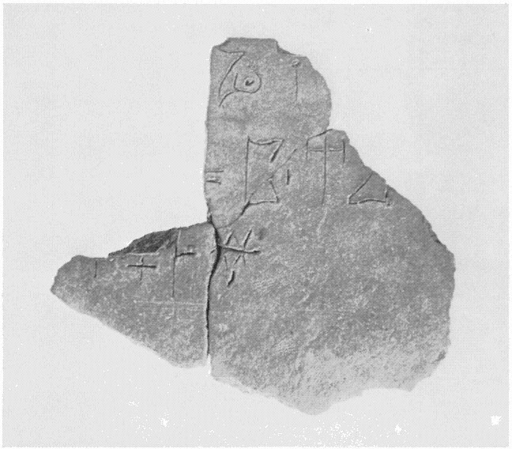
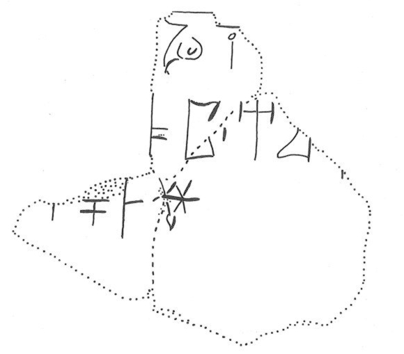

-
KH79+89
Names
KH79+89, KH 79+89
Support
Tablet
Location
Khania
Findspot
Unavailable


Scribe
Unavailable
Context
Not Available
Dimensions
Catalogue
Khania M. 79 + 89. Cabletté
Hiraklion Museum
Readings
1 1 0 MI certain
1 1 0 NA certain
2 2 1 PA certain
2 2 1 TA certain
2 2 2 *900 certain
2 2 3 A certain
2 2 3 RA certain
3 3 4 PA doubtful
3 3 4 DA certain
3 3 4 NI certain
𐘻𐘅
𐘂𐘳𐄁𐘇𐘴
𐘂𐘀𐘝
MINA
PATA*900ARA
PADANI
𐘻𐘅
𐘂𐘳𐄁𐘇𐘴
𐘂𐘀𐘝
MINA
PATA*900ARA
PADANI
KH 79+89
, page tablet (KH MUS. 79+89) (GORILA V: 38-39;
GORILA III: 94-95 publishes KH 79)
Schoep
2002, type Ia (mixed
commodities)
|
side.line
|
statement
|
|
.1
|
]MI-NA[
|
|
.2
|
]PA-TA •
A-RA-[
|
|
.3
|
]-
PA
-DA-NI
|
|
.4
|
vacat
|
|
|
infra
mutila
|
This is a
remarkable document in several respects: 1) it is finely and grandly
written; 2) the text does not take up all the tablet; 3) the first word
contains ]MI-NA[, a combination frequently found; 4)
two-word phrases are rare and most of them occur in headings; and 5) after
the two words whose endings are preserved, there are no numbers (cf. PH
6).
Commentary © John Younger
References
papers/GORILA-Vol3.pdf#page=118